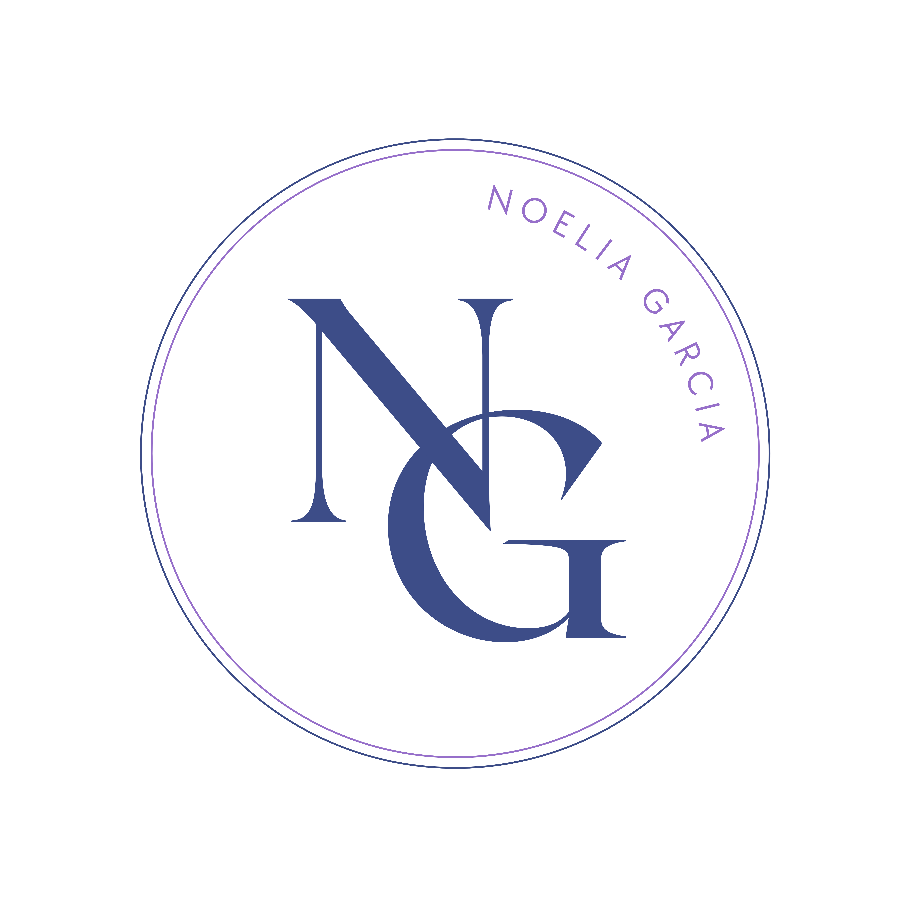

Revista digital de turismo
Diciembre 2026
Nómade
Destino del mes Estambul Experiencias Ideas para vivir cada destino Guía Todo para viajar tranquilo

Editada por
Noelia García
Editorial
Bienvenidos a bordo
Cada mes reunimos ideas para salir, datos útiles para viajar tranquilo y recomendaciones para que armes tu próximo viaje sin apuro.
En este número: tres destinos para descubrir, ideas para vivirlos, sabores de distintos rincones del mundo y una guía práctica para que tus documentos, tu dinero y tu equipaje no sean un problema.
Buen viaje, el equipo de tu agencia
En este número
Todo lo que viene
Inspiración
Ideas para tu próximo viaje
Playas paradisíacas, montañas imponentes y ciudades llenas de historia. A veces el mejor plan empieza con una foto que no podés dejar de mirar.
Explorá el mundo
Descubrí experiencias únicas que te esperan en cada destino.
Inspiración
Destinos para descubrir
Lugares que pueden convertirse en tu próximo viaje.
Turquía
Estambul Una ciudad fascinante entre Europa y Asia.
Estambul en cuatro claves
Antes de ir
Europa
Italia Arte, historia, ciudades y gastronomía.
Italia en cuatro claves
Antes de ir
Experiencias
Viví el destino
Ideas para sumar a tu viaje. Consultá con tu agente qué opciones hay disponibles en cada destino.
Gastronomía
Sabores del mundo
Viajar también es sentarse a la mesa. Tres platos que cuentan algo de los lugares donde nacieron.
Entrevista del mes
Charla con protagonistas
Nombre del entrevistado
Operador / Viajero frecuente · Destino favorito
Viajeros
Historias de viaje
Quienes ya viajaron cuentan cómo fue.
Guía del viajero
Tus documentos
Guía del viajero
Dinero y tarjetas
Guía del viajero
Salud y seguro
Guía del viajero
En el aeropuerto
Guía del viajero
Equipaje en vuelos
Algunos consejos para preparar tu equipaje antes de viajar.
Equipaje
Lo esencial
Importante
Las condiciones de equipaje pueden variar según la aerolínea, tarifa y destino. Consultá siempre las condiciones correspondientes a tu vuelo.
Antes de salir
Tu checklist
Para comunicarte
Frases útiles
Español Inglés Italiano Turco
Alianzas
Operadores aliados
Oportunidades
Propuestas de operadores
Destacado de agencia
Nuestras salidas
Hasta la próxima
Tu próximo destino empieza hoy
Esperamos que estas ideas te inspiren a armar la valija. Guardá esta edición en tu celular para consultarla cuando salgas de viaje.
¡Nos leemos en el próximo número!
Tu agencia de viajes
Tu agencia
© 2026 Nómade por Noelia García. Todos los derechos reservados.